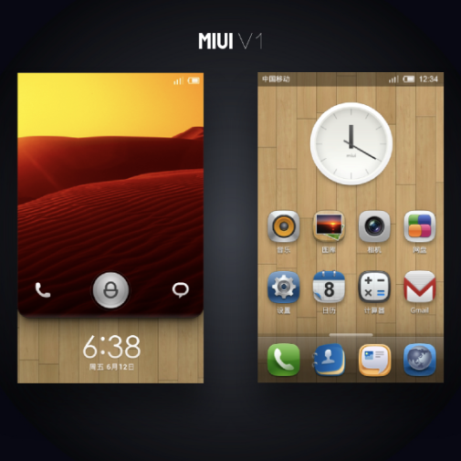

Как создавалась MIUI
Официальный сайт компании mi.com сообщает, что нет каноничной расшифровки первых двух букв в названии. MI можно определить как простое сочетание «Mobile Internet» или более амбициозное «Mission Impossible» (Миссия невыполнима) — как обозначение трудностей, которым бросила вызов компания Xiaomi. Но есть и множество других трактовок. Во второй половине названия UI нет интриги — это User Interface.
Компания Xiaomi с помощью MIUI не планировала захватить мир, а только сделать мобильную систему с аналогами сервисов Google, которые в тот момент не работали в Китае. Так что делая упор на импортозамещение, им удалось без проблем найти финансирование от государственной инвестиционной компании Сингапура Temasek Holdings, нескольких частных венчурных фондов Китая и от компании Qualcomm.
Над первыми версиями системы MIUI работали всего три человека. Ее разрабатывали на основе Android 2.2 Froyo. Так как у Xiaomi еще не было своих смартфонов, то их система ставилась на устройства сторонних производителей — первым стал Google Nexus One. 16 августа компания Xiaomi анонсировала выход MIUI версии 0.8.16 в формате открытого бета-теста. Во многом чувствовалось, что над системой работала маленькая команда. Разработчики не перевели систему даже на английский язык, не говоря уже о русском. Несмотря на многочисленные баги, многим пользователям понравился новый интерфейс и производительность системы. И уже через два месяца после анонса системы пользователи знаменитого форума 4pda перевели MIUI на русский язык и появились порты для других смартфонов. Так у Xiaomi появилась первая база активных поклонников.
Система MIUI имела множество промежуточных версий и постоянно развивалась. Разработчики собирали отзывы и рекомендации от сообщества, чтобы быстро исправлять проблемы и добавлять новые функции. Вторая версия MIUI вышла уже через полгода, но в основе все еще лежал Android 2.2, хотя уже вышла версия 2.3 Gingerbread. В системе изменился интерфейс, появилось больше возможностей для кастомизации и переработали «звонилку». В общем, ничего кардинально нового.
Чуть позже вышла MIUI V2 и на Android 2.3. Пожалуй, с этого релиза и началось более массовое распространение системы, если такое можно сказать про кастомную прошивку, которую обычно ставят только немногочисленные энтузиасты. Систему полюбили за множество тем и возможности их комбинировать, удобные функции и небольшие полезные «фишки», вроде отображения количества пропущенных звонков на иконке «звонилки» и стандартный файловый менеджер.
Здесь вы можете посмотреть, как система MIUI менялась от первой до восьмой версии.
Итак, Xiaomi уже стала популярной компанией в узких кругах людей, у MIUI база пользователей составляла 500 тысяч. И у создателей компании наверняка возник вопрос, что делать дальше. Решение оказалось очевидным.
Компания Xiaomi с помощью MIUI не планировала захватить мир, а только сделать мобильную систему с аналогами сервисов Google, которые в тот момент не работали в Китае. Так что делая упор на импортозамещение, им удалось без проблем найти финансирование от государственной инвестиционной компании Сингапура Temasek Holdings, нескольких частных венчурных фондов Китая и от компании Qualcomm.
Над первыми версиями системы MIUI работали всего три человека. Ее разрабатывали на основе Android 2.2 Froyo. Так как у Xiaomi еще не было своих смартфонов, то их система ставилась на устройства сторонних производителей — первым стал Google Nexus One. 16 августа компания Xiaomi анонсировала выход MIUI версии 0.8.16 в формате открытого бета-теста. Во многом чувствовалось, что над системой работала маленькая команда. Разработчики не перевели систему даже на английский язык, не говоря уже о русском. Несмотря на многочисленные баги, многим пользователям понравился новый интерфейс и производительность системы. И уже через два месяца после анонса системы пользователи знаменитого форума 4pda перевели MIUI на русский язык и появились порты для других смартфонов. Так у Xiaomi появилась первая база активных поклонников.
Система MIUI имела множество промежуточных версий и постоянно развивалась. Разработчики собирали отзывы и рекомендации от сообщества, чтобы быстро исправлять проблемы и добавлять новые функции. Вторая версия MIUI вышла уже через полгода, но в основе все еще лежал Android 2.2, хотя уже вышла версия 2.3 Gingerbread. В системе изменился интерфейс, появилось больше возможностей для кастомизации и переработали «звонилку». В общем, ничего кардинально нового.
Итак, Xiaomi уже стала популярной компанией в узких кругах людей, у MIUI база пользователей составляла 500 тысяч. И у создателей компании наверняка возник вопрос, что делать дальше. Решение оказалось очевидным.